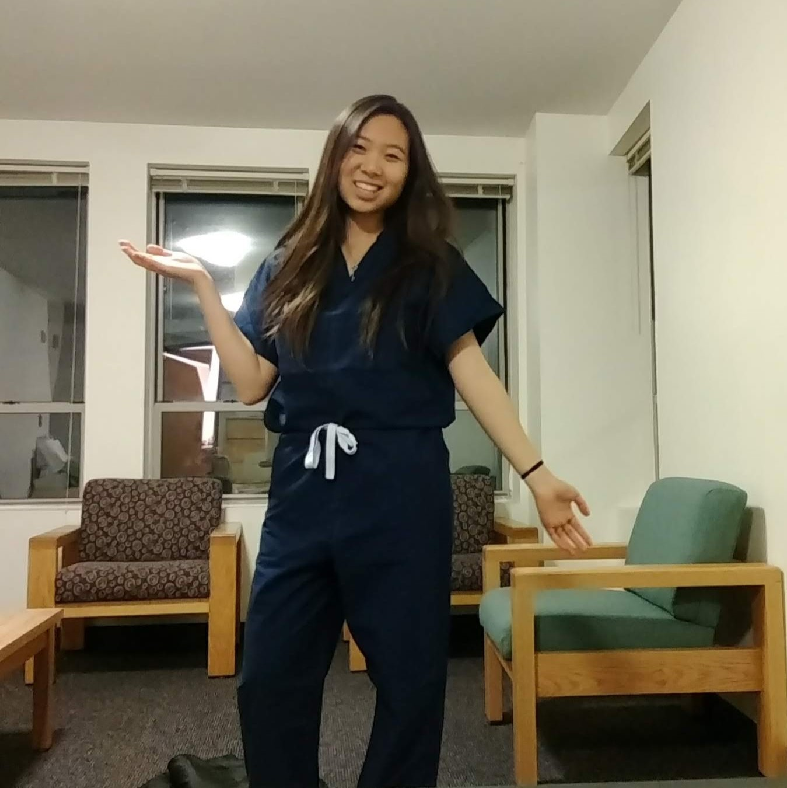

karisa tzeng
i design on- and offline experiences and build communities for people to share knowledge and act upon their ideas. i can connect you to other cool people working in tech, design, entrepreneurship, and beyond.
say hi on Messenger@karisatzeng or hello@karisatzeng.com
residing: Boston, MA, US until Dec 16
i'm excited for:
- volunteering at Illuminus Boston 2018 (on Nov 2-3!)
- friends visiting, new to Boston:
Steven from Vancouver, Atsushi from California / Tokyo - Karisa's Fall (Short) Film Fest Friday (on Nov 9!)
values
- thoughtfulness
- independence
- confidence
- professionalism

present
conference logistics coordinator
@Scout Design Studio // since Sep 2018
source speakers from global design community for Scout’s 2nd annual design conference, Interventions. establish Scout Interventions brand and 2019 theme with conference team of 5.
events specialist
@NU Sci // since Sep 2018
coordinate NU Sci's events and issue distribution with the Marketing Team. manage Facebook, Instagram, and Twitter accounts for magazine outreach across Boston science community.
organizer, host
film fests / movie nights // since high school
i've hosted informal movie nights since high school because i love gathering people and meeting new people (friends bring new friends!). it's not the best social type of event because we're watching a screen, but it's still fun to experience a visual adventure together. i usually invite random people and encourage people to get out of their comfort zone / usual friend groups to meet others. i also love short films, which i first started watching through shortoftheweek.com in 2014. i'm currently combining my interests in short films and my movie nights to bring to Boston a biweekly short film festival.
interests:
technology and possibility, travel and exploration, hacker / maker communities and collaboration. adventure, photography, short films, animal welfare, healthcare, tennis, swimming.
adventures
Washington, D.C., US | Oct 5–8 | with: Heng Juat Tan
a recent trip to D.C. during Columbus Day Weekend. photos of me taken by Juat, rest are taken by me.


Airbnb referral program! Get $40 off your trip (new accounts only). Just say hi for my link.
shoutouts
10/27 ANDREW FONG FOR LETTING ME BORROW HIS NURSE SCRUBS FOR THE LOWEST EFFORT, LAST MINUTE HALLOWEEN OUTFIT EVER...

10/26 KALLY LYONNAIS AND RAVEN GUENNEGUEZ FOR HELPING ME SET UP OCT 26 FILM FEST IN NEW VENUE
JAMIE GUO AND NIKITA DSOUZA FOR ALWAYS BEING THERE FOR ME
ideas
to think about

for fun
- taking a photo of each street named after a state in Washington, D.C.
- marble run competition
- hosting walk-through Halloween haunted house experience
film fest
text "filmfest" to 857-701-8975 to keep in the loop
Karisa's Fall (Short) Film Fest Fridays
Boston, MA, US | Oct – Dec 2018
now calling for local Boston filmmakers! show us what you made!
next: 369 Huntington Ave | Nov 9, 7:30-9:45p
focusing on STRONG NARRATIVE
- comedy
- drama
- crazy cliffhangers
&c!
previous: 369 Huntington Ave | Oct 26, 7:30-9:45p
focusing on CREATIVE STYLE
- animation
- stop-motion
&c, where behind the scenes is just as cool as the film itself!
films shown:
- Rabbit and Deer - first short film that i remember watching
- Writer's Block
- Gulp - world's largest stop-motion, by Nokia
Making of Gulp - Dot - world's smallest stop-motion, also by Nokia
Making of Dot - The Duck
- Tusk
- Less Than Human - Victor Silva's pick
- history of the entire world, i guess - oh, Bill Wurtz; Kevin Wu's pick
- The Pizza Chef, Pozzo - unlisted. Jamie Guo and i created this in 2014
The Pizza Chef, Puh - unlisted. Jamie Guo and i created this in 2014 - The Bigger Picture
Making of The Bigger Picture - One Small Step - Raymond Huang's pick
291 St Botolph St (East Village), Room 02 | Oct 12, 7-9p
introduction
- Rabbit and Deer - first short film that i remember watching
- Gulp - world's largest stop-motion
Making of Gulp - Bear - strong narrative
- Stuck in the Sound, Let's Go - animated music video with narrative
- Possibilia - interactive